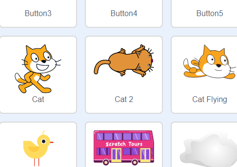
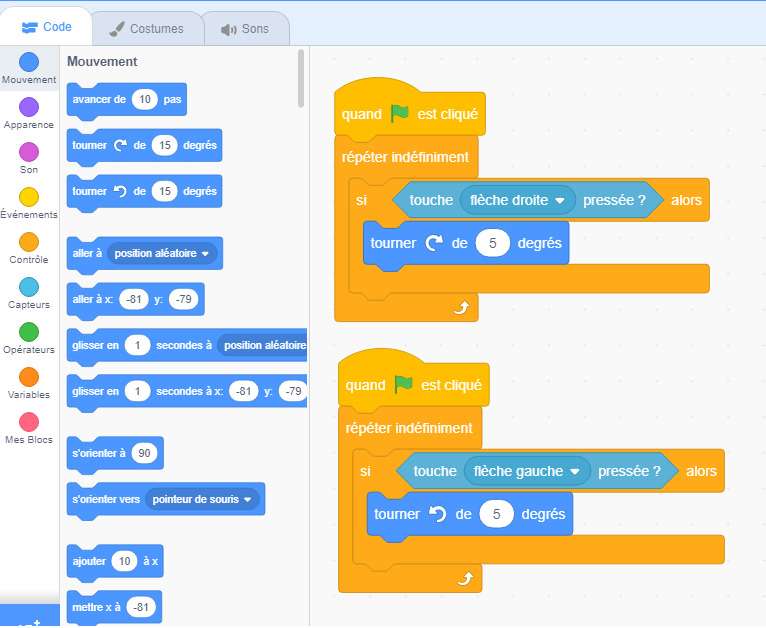
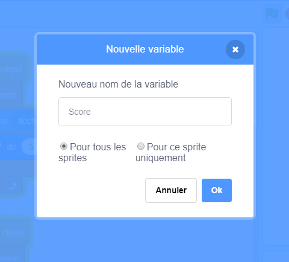
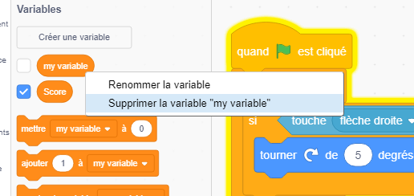
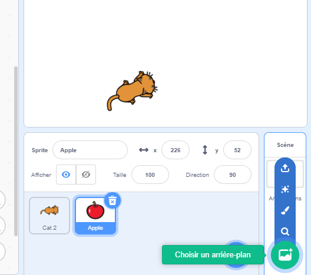

On va créer un jeu qui a comme but de collecter le plus de pommes possibles dans un temps limité.
On commencera par créer un personnage
(qui s’appelle “Sprite” en scratch) qui pourra bouger dans notre niveau.
Comme vous le voyez, ce projet est intact. On va commencer en cliquant la bulle en bas a droite avec un petit chat comme icône et choisir un personnage.
Je vais choisir le chat avec la vue d'en haut, vous pouvez choisir le personnage que vous voulez.
N'OUBLIEZ pas d'éliminer le
vieu chat, il ne sert a rien.
Maintenant, on va passer à la partie la plus
intéressante! Coder le mouvement du chat.
On commence par mettre la tête du programme, le bloc “quand DRAPEAU est cliqué” et juste après on met “répéter indéfiniment”
pour que le script marche toujours et tous ce qu’on va mettre dedans, Scratch le fera toujours.
Ce block est très important sur scratch car c’est le plus utiliser dans les jeux mais à l’école on ne l’utilise presque pas.
Maintenant on fera le mouvement. On a besoin d'un script qui détecte si on appuis la flèche en haut et puis pour
que le chat avance de X pixels.
Donc on prend le script “Si … alors” et on le met dans notre script principal. Et on ajoute “Touche flèche de haut
pressée” dans le script
“Si … alors”. Ajoutez le block “Avancer de … pas”, le nombre de pas peut être quelconque,
ça dépend de la vitesse que vous voulez mettre au chat.
Tester le script! Le chat peut avancer, mais il ne peut pas tourner. On va donc créer un autre script qui se
chargera de cette tâche. On met le block “Quand DRAPEAU est cliqué”, le block “répéter indéfiniment”, le block
“Si … alors” et maintenant on doit ajouter le block “Touche flèche droite pressée”. Ça nous donne: Si flèche droite
pressée, alors … . Il faut que notre chat puisse tourner donc on ajoute le block
“Tourner à droite … degrés”. Comme
avant, le nombre de degrés dépend de la vitesse que vous mettez au chat.
Le chat peut tourner que dans une direction, cela ne convient pas. Donc on fera la même chose mais pour la gauche, il suffit de dupliquer le script (click droit -> dupliquer), changer “Si flèche droite” à “Si flèche gauche” et changer la direction de rotation; de droite à gauche.
Maintenant notre chat a un mouvement complet!
Faites le chat un peu plus petit dans la section des “Costumes” comme ci-dessous.
Maintenant on va commencer par coder le “score” avec des variables. Cette partie peut être un peu compliquer pour les nouveaux mais pour ne pas vous perdre vous pouvez vous aidez des vidéos sur l’internet, par exemples celle-là (cliquez ici), qui explique comment faire un score.
On commence par créer une variable qui s’appeler “Score”.
Eliminez toutes les autres variables que vous avez (sauf le Score) comme “ma variable” (clique droit -> supprimer la variable ...)
Pour que le score monte, le chat doit toucher un Sprite, donc on va créer un autre Sprite. Je vais choisir une pomme.

Maintenant il faut que quand le chat touche la pomme, le score change par 1, et en même temps elle se téléporte vers une position aléatoire. On commence par mettre “si touche chat alors ajouter 1 à score” et juste après ce script on ajoute, “aller à position aléatoire”. Tous ces blocks se trouve dans: “Mouvements”, “Capteurs” et “Variables”. Juste avant, quand le programme commence, on doit mettre le block “mettre score a 0” pour que le score puisse se remettre à 0 quand on commence le jeu.

Faites la pomme plus petite par rapport au chat.
On a un système de score fonctionnel! Maintenant il nous reste juste de programmer un chronomètre pour que le jeu se termine. Heureusement Scratch a fait déjà le travail. Dans “capteurs” il y a un chronomètre, cliquez sur le petit rectangle à côté de lui et il va apparaitre. Maintenant il faut créer une autre variable qui s’appelle “temps”. On va aussi créer un autre script, il se compose de: “mettre temps à chronomètre”.

Tester le jeu. Il marche mais il ne finit jamais! C'est pour ça qu’on va mettre dans le script du score, une petite modification:

Maintenant notre jeu s’arrête quand 20s sont passés ! Le code est fini, il vous reste donc de changer le fond de la scène.
Félicitation （*＾-＾*）! Vous avez fini votre jeu. La manière qui est présenter n’est pas très bonne par rapport au code mais si vous pensez faire un autre jeu regarder des tutoriels sur YouTube ou sinon regarder le programme d’autre jeu par exemple: